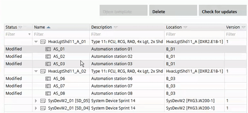

Changing an automation station configuration
Automation stations inherit the configuration of their parent application template in Building > Application & device overview.
Application & device overview
You can easily change the configuration of an automation station by moving the automation station into another application template. The moved automation station will take over the configuration of the target application template.
The source and target application template have to be of the same type and version.

Move an automation station from one application template to another
- The source and target application template have to be of the same type and version.
- Open Building > Application & device overview.
- Select an automation station.
- Drag and drop the automation station to the target application template.

Moving an automation station from one application template to another does not affect the building structure. Automation stations in the building structures are not moved.